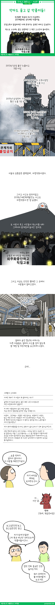

악마도 울고 갈 악플러들!

온라인 악플 특집편
- 개념없는 악플러들!
- 댓글조작, 여론몰이!
- 악마도 울고 갈 악플러들!
- 악플이 키우는 왜곡방송!
얼마전 공장에서 일하다 사망한 김용균 씨를 아시나요?
회사의 무리한 방침으로 인해 사망에 이른 사건인데 이로 인해 최근 김용균 법이라는 법률 개정이 진행되고 있답니다. 김용균 씨의 어머니가 힘들게 언론을 통해 외친 덕에 결과를 보게 되었지요.
그런데 이런 어머니의 행동을 ‘자식팔이’, ‘너만 억울하냐? 억울한 사람 수도 없다’, ‘지가 먼데 대통령을 만나자고 하냐?’ 라는 악성 댓글이 난무합니다. 과연 이 댓글 작성자들이 어머니의 행동을 이해나 한건가요? 죽은 사람을 살려달라는 것고 아니고 보상을 해달라는 것도 아니예요.
‘자기 자식처럼 일하고 있는 사람들 같은 사고 안나게 환경을 개선하는 법을 제정해 달라’
이 말을 하고 있어요. 그런데 이게 개인주의 행동인건가요? 정치적으로 싸우는 사람들 속에는 그를 지지하는 지지자가 많아요. 이 지지자들의 가장 큰 문제는 세상이 바뀌기 위해 지지하는 것이 아니라 단지 그 사람을 팬심으로 지지하거나 그냥 댓글놀이를 좋아하는 사람들이 너무 많다라는 거예요.
그리고 그런 사람들의 행동이 타당성 있다는 생각에 옳은 일이라 생각하고 덩달아 지지하는 사람들도 생겨나지요.
이러지 말아주세요. 사람이 아닌 그의 행동을 판단해서 지지하거나 반론해야 한다고 생각해요. 자신의 성향이 한 쪽으로 취우치는 것은 개인적 사상이니 이건 인정해야 하는 것이지만 사람만을 지지하는 행동은 좋지 않아요.
“사람을 평가하지 마라. 그 사람의 행동을 평가해라.”
라는 말을 상기해 보았으면 좋겠어요.